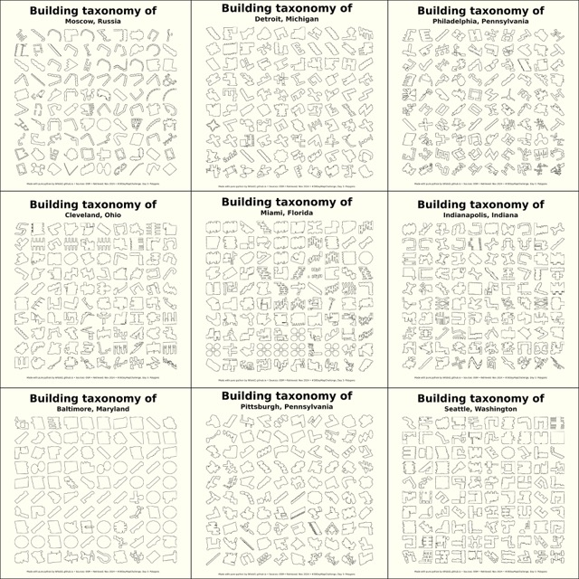
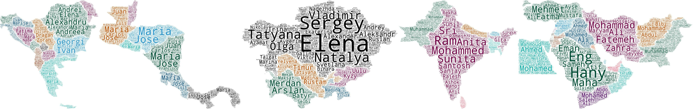
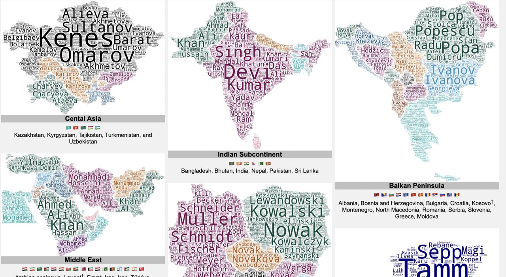
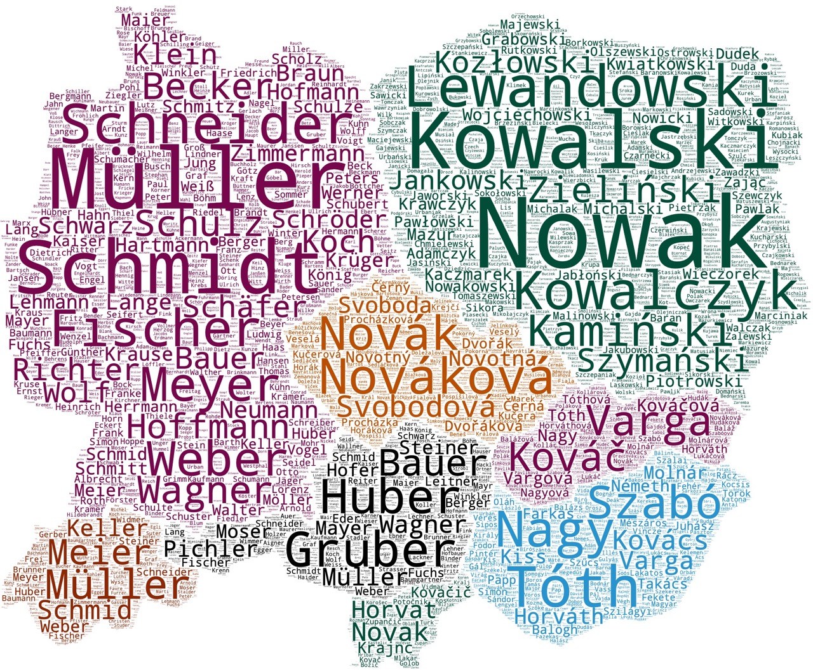
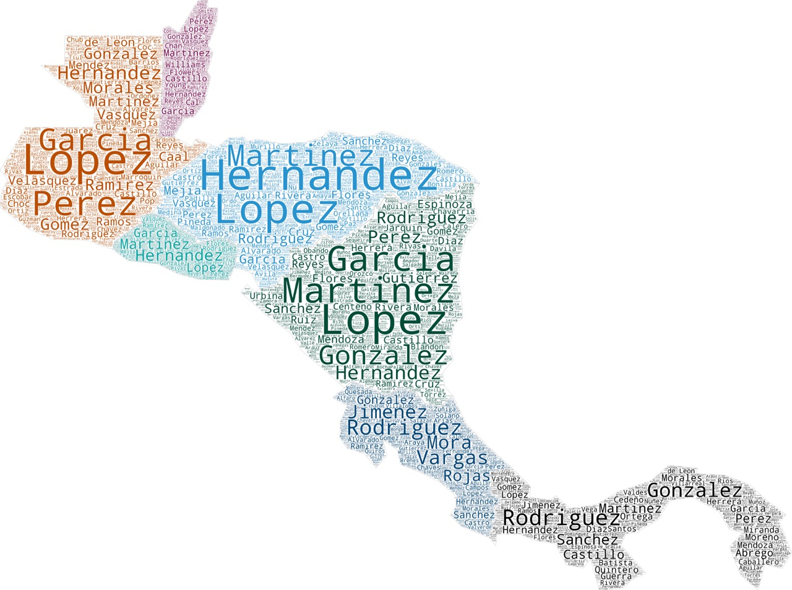
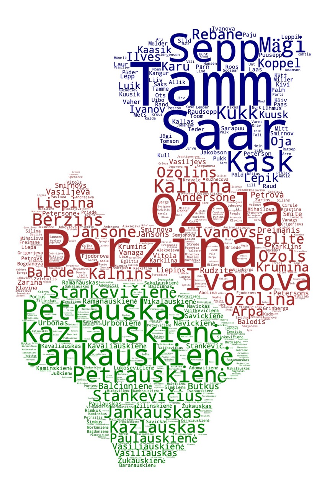
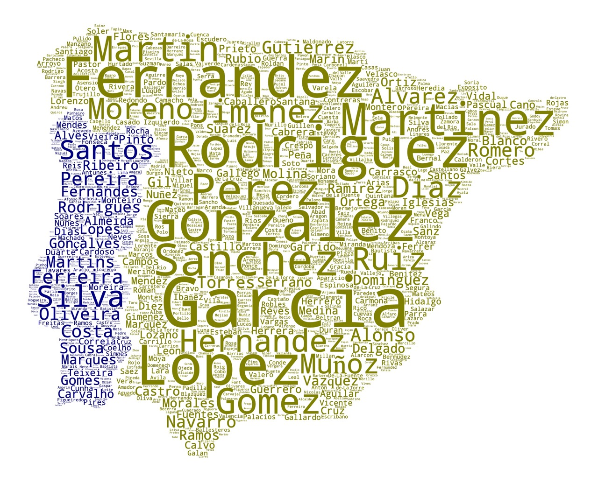
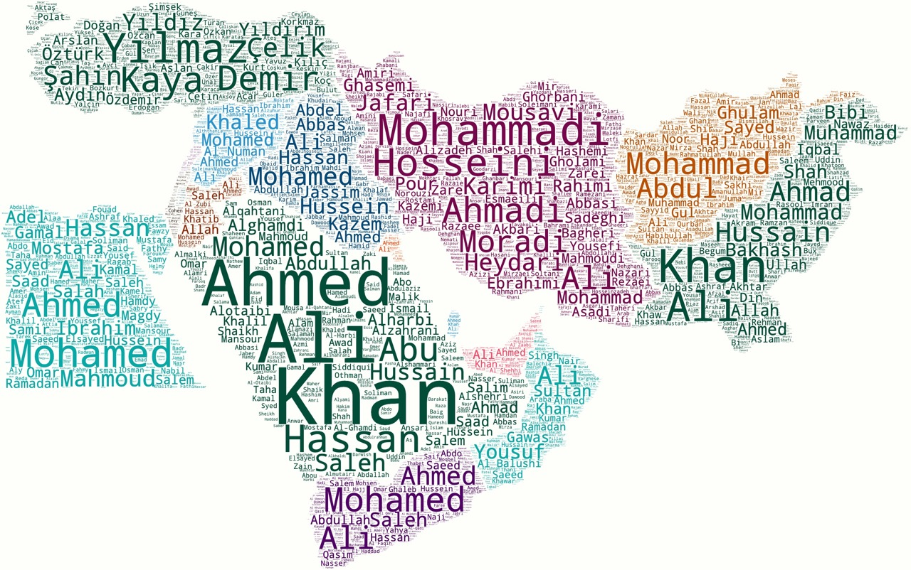
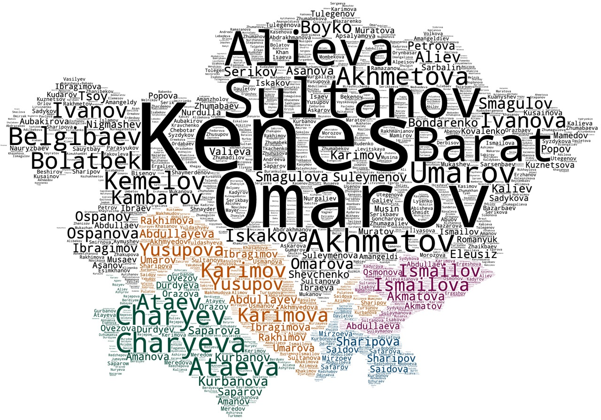

🏢 Building taxonomy
Simplified building toxonomy of selected cities

Utilizing OSM data with different APIs to plot minimalistic "small multiple" chart...
👑 "Rulers of The world", Kazakh Khanate
Rulers of Kazakh Khanate

Creative visualisation of timelines when rulers, monarchs, and leaders reigned across the world.
🌐 Forenames of the World
Visualizing forenames across the world

This post experiments with the most common forenames across the world through wordcloud visualisation. Data came from Forebears.io...
⛁ Surnames of the world
Visualizing surnames across the world

🧭 Main menu for navigation within countries and geographical regions of wordcloud visualisations from project "Surnames" 🗺️
🌍 Surnames of Central Europe
Visualizing surnames across the world

This post explores the most common surnames across Central Aurope through wordcloud visualisation. Data came from Forebears.io...
🌎 Surnames of Central America
Visualizing surnames across the world

This post explores the most common surnames across Central America through wordcloud visualisation. Data came from Forebears.io...
🌍 Surnames of Balkan Peninsula
Visualizing surnames across the world

This post explores the most common surnames across Balkan Peninsula through wordcloud visualisation. Data came from Forebears.io...
🌍 Surnames of Baltic States
Visualizing surnames across the world

This post explores the most common surnames across Baltic States through wordcloud visualisation. Data came from Forebears.io...
🌍 Surnames of Iberian Peninsula
Visualizing surnames across the world

This post explores the most common surnames across Iberian Peninsula through wordcloud visualisation. Data came from Forebears.io...
🌏 Surnames of Indian Subcontinent
Visualizing surnames across the world
This post explores the most common surnames across Indian Subcontinents through wordcloud visualisation. Data came from Forebears.io...
🌍 Surnames of Middle East
Visualizing surnames across the world

This post explores the most common surnames across Middle East through wordcloud visualisation. Data came from Forebears.io...
🌍 Surnames of Central Asia
Visualizing surnames across the world

This post explores the most common surnames across Central Asia through wordcloud visualisation. Data came from Forebears.io...
Witold's Data Blog
![kotek, image [vector, .svg]](https://www.svgrepo.com/show/85124/cat.svg)